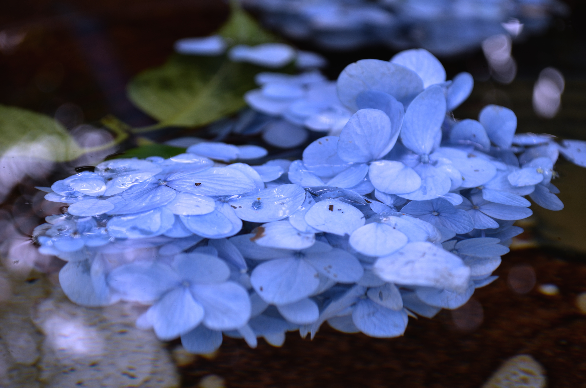
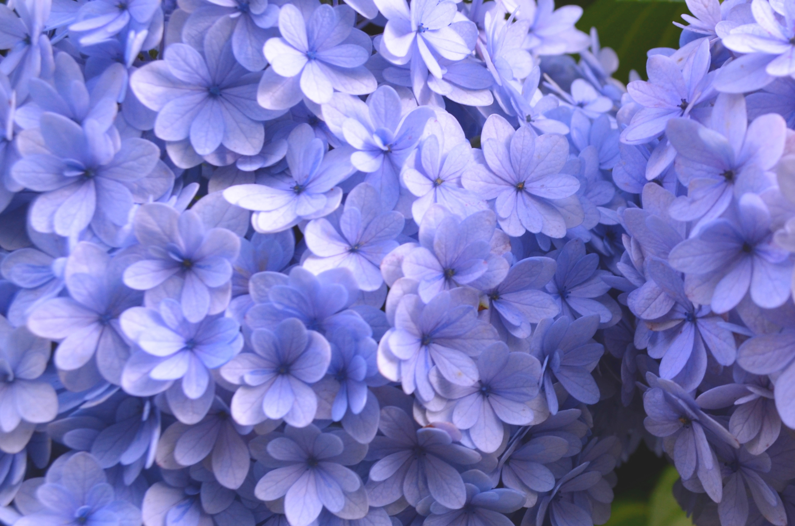
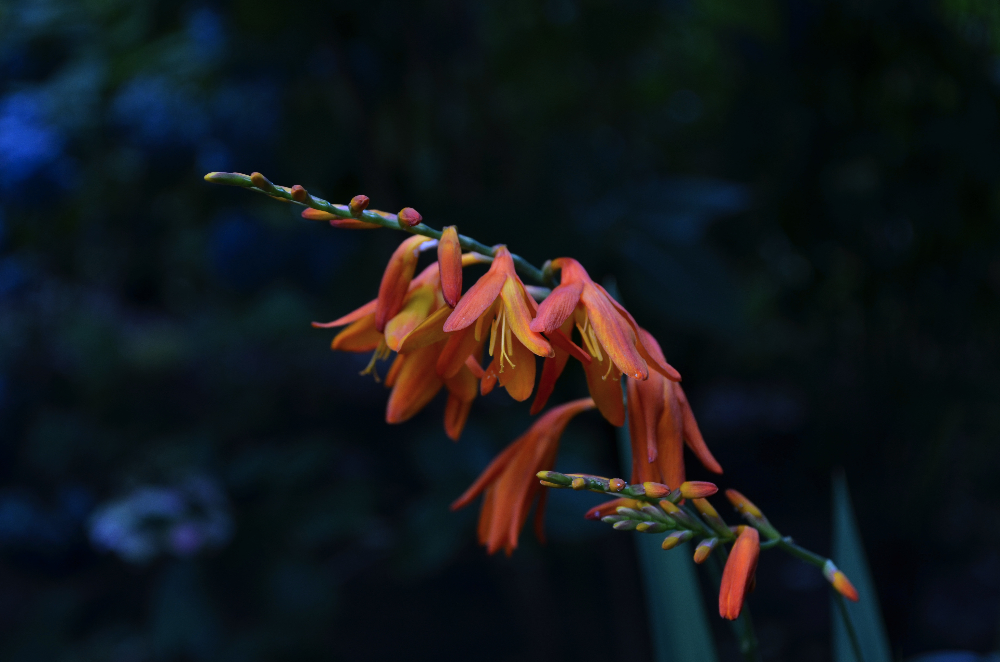
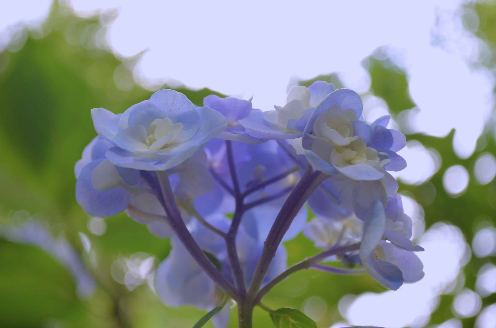

FLOWER PORTFOLIO
本サイトは「花」をテーマにしたフォトギャラリーです。
水面に浮かぶ涼やかな紫陽花や、雨上がりに鮮やかに咲き誇る四季の花々を記録しています。
花々が魅せる繊細なグラデーションと静寂の世界を、どうぞごゆっくりお楽しみください。

撮影時期：2026年6月｜場所：明月院
FLOATING BLUE - 水彩の記憶

撮影時期：2026年6月｜場所：明月院
BLUE DIVERSITY - 群生する静寂

撮影時期：2026年7月｜場所：明月院
FLAME IN THE DARK - 凛と咲く橙

撮影時期：2026年6月｜場所：横須賀
SILENT GLOW - 光を仰ぐ花弁
CONTACT
作品に関するご感想や撮影に関するご相談はこちらからお願いいたします。
メッセージを送る